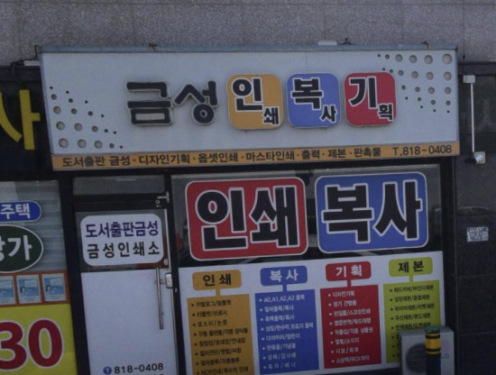
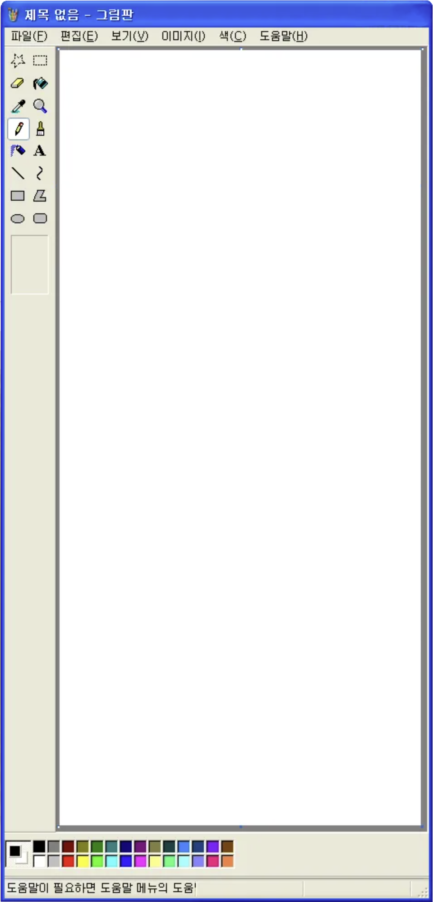
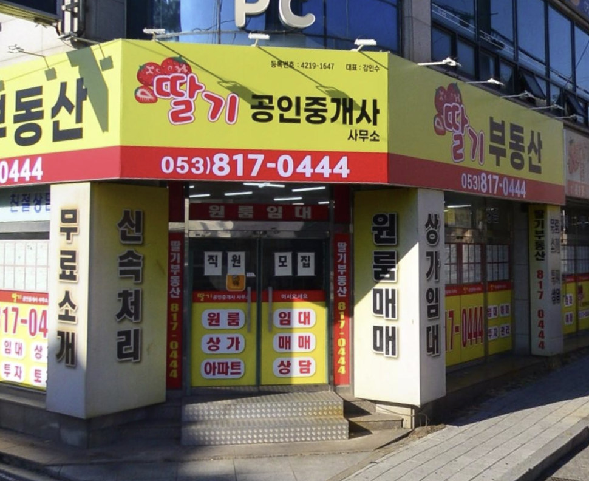

인,복,기
간판 양쪽 끝부분에 원형 점들이 가운데에 있는 글자를 강조해 준다. 인쇄, 복사, 기획 이란 단어들이 마치 노트북 아이콘들 느낌을 낸다. 심플하게 노랑, 파랑, 빨강을 배경으로 하여 레트로 픽해 보인다.
합기도 킥복싱
폰트와 색감, 뒤로 약간 눕혀진 글자들이 레트로 픽한 분위기를 낸다. 합기도 킥복싱이란 글자를 강조하기 위해 이 글자만 색을 바꾼 점과 뒤에 그림자 표현을 넣은 게 단순해서 심플하다. 간판에 딱 필요한 정보들만 적어둔 것도 시선이 가서 찍었다.

딸기 부동산
글자 뒤에 단어 그 자체를 그림으로 넣은 게 촌스럽다. 그렇기에 사람들이 잘 안 쓰는 디자인만큼 흔한 간판이 아니라 시선이 갔다. 오히려 그 촌스러움이 귀여운 느낌을 내는 데 도움을 주기도 한다. 그 외에는 중요한 단어들을 딸기와 같은 빨간색으로 강조한다.